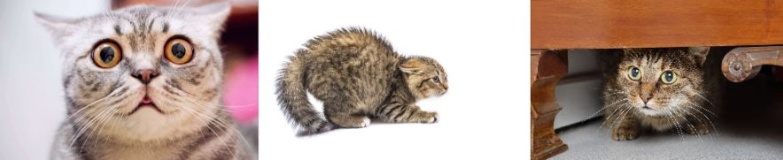

Why are cats afraid of cucumbers?
One of the most popular reasons or theories of why cats are afraid of cucumbers would be that cucumbers resemble snakes. Cats are genetically hard-wired through impulse to not get close to snakes whenever possible.
There are videos popping up everywhere around the world of cats getting scared with just simple cucumbers. Some seem funny, but who would want to constantly be frightened?
Do not scare your cat
Scaring your cat is a bad idea and should be avoided at all costs. But what are the symptoms of a scared cat? What are the things you can do to help your scared cat? Below, we will be going over the signs to look for and the things you can do to help your furry friend.
How do you know if your cat is afraid?
Cats will more than likely show these signs to let you know they are scared.
- They keep hiding
- They run away
- Aggression (This includes any hissing, spitting, biting, scratching or swatting)
- No control over bowels/bladder
- You see them freeze in place
- They release anal glands
- Not using the litter box
What are some common fear triggers?
Observing your cat on a daily basis is a great way to find out what is happening to your cat.
- Quick movement or a loud noise
- A very active child
- Any type of stressful event (Like visiting the vet)
What about fearful behavior in cats?
Some felines are so afraid that they appear to live in a near-constant state of stress and anxiety, or they might reroute their worry into aggressiveness towards individuals or other family pets.
Some fearful habits are normal and you shouldn't have to worry about them. Many cats will feel scared or insecure in a brand-new environment. Occasionally, your cat might hide for a day or 2 when brought to live in a brand-new house.
In some cases a distressing experience such as taking him or her to the vet or bringing a brand-new animal into the house can interrupt his or her regular routine. If this happens you might see your cat hiding under the bed or table.
So what can you do to help your scared cat?
- Make sure your cat has easy access to water, food and their litter box. Tidy the litter box and be sure to change the water and food every day so you understand whether or not your cat is eating and drinking.
- Food is an excellent incentive for cats, so if your cat is scared of somebody in your home, let that person take care of the feeding duties to have your cat warm up to them.
How to deal with your cat if they become aggressive?
- The sooner you intervene the better.
- If you physically punish your cat, their aggression will most likely get worse. So do not physically punish them.
- If you are ever threatened by your by your cat, or if they threaten someone else or another animal, you should seek aid as soon as possible from a veterinarian.
- To keep everyone safe while you are getting help or advice, restrict your cat's movement to a location in your home where you can keep can monitor him or her while keeping him or her from others.
- Any type of bite or scratch from a cat should be taken seriously as they can quickly become infected.
- Avoid any situations that you know will make your cat aggressive
What type of feline or cat aggression are there?
There are many different types of aggression in cats. It is necessary to know what type your cat might be showing so you could understand why.
- Petting-Induced Aggression
- Play Aggression
- Fear Aggression
- Territorial Aggression
- Maternal Aggression
- Status-induced Aggression
- Redirected Aggression
- Pain-Induced Aggression
Over-stimulation is the main cause of this type of aggressive.
This happens when your cat has not been allowed to socialize.
Anytime your cat has has been stimulated in an unfamiliar way.
Cat will sometimes try to show their dominance in an area where they think they own.
You will notice this type of feline aggression in cats that have recently whelped.
Cats will direct this type of aggression to certain individuals to assert dominance.
Any type of stimuli that is directed to a cat that they cannot directly respond to.
This type of cat aggression is seen in cats that are experiencing discomfort or pain.
Conclusion
Cats are afraid of cucumbers because they think of them as snakes. Most cats have never seen a snake before, however, their natural instincts kick in and tell them that the cucumber is dangerous.
Many of the information in this article was taken from The Humane Society Of The United States.